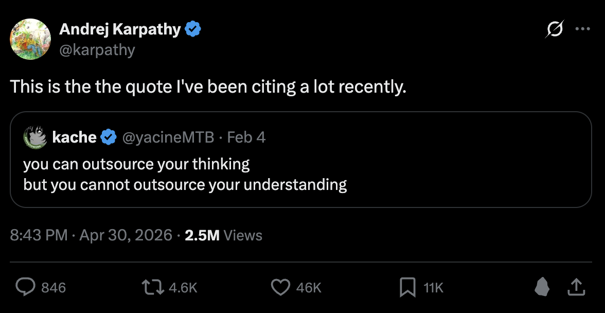

Main session
Stays lean
You keep building, your context isn't flooded with raw files.
A practical playbook for shipping faster with Claude Code & Cursor, the latest features, the mental models behind them, and how to adapt them well.
From autocomplete to autonomous agents, why the workflow changed.
The one loop that makes every agent work, and how to direct it.
Terminal-first agent: setup, context, sub-agents, hooks, MCP.
AI-native editor: Tab, Agent, rules, cloud agents, review.
When to use which, the transferable skills, and a 30-day rollout.
In a few short years, the unit of help went from a token, to a turn, to a whole task.
Predicts the next few lines. You drive everything else.
Ask & paste. Good answers, you wire them in by hand.
Read the repo, plan, edit many files, run commands, verify, iterate.
The agent now owns the loop, not just the keystroke, which is why how you direct it matters more than how fast you type.
Every good outcome comes from closing this loop, and the biggest lever is giving the agent a way to check its own work.
Files, docs, tickets, errors
Edit code, run commands
Tests, build, lint, screenshot
Read failures, fix, repeat
The single highest-leverage move: give it something to verify against, tests, a build, a type-checker, a screenshot to diff. Then the loop closes on its own.
The context window is finite, and quality degrades as it fills. Managing it is the skill that separates "meh" from "magic."
Quality degrades as the bar fills. Almost every "pro" feature in both tools exists to help you spend context well.
Anthropic's agentic coding tool, it lives in your terminal, IDE, and CI, and works across your whole codebase.
Describe a goal in plain language, it gathers context, acts, and verifies, looping until the work is actually done.
plain language
code + tests passing
For anything non-trivial, separate understanding from doing. It stops the agent from confidently solving the wrong problem.
Plan mode (⇧Tab), read-only. "Understand auth."
"Draft a step-by-step plan for OAuth." Review & refine.
Exit plan mode. It edits, runs tests, fixes failures.
"Commit & open a PR" with a clear message.
Wrong turn? Esc to steer
mid-flight, or Esc
Esc / /rewind to a
checkpoint, Claude snapshots before every edit.
A markdown file Claude reads at the start of every session. Commit it so the whole team, and every agent, shares the same context.
Keep it under ~200 lines · run
/init to start.
## Commands
- Build: `pnpm build`
- Test: `pnpm test --run`
- Lint: `pnpm lint`
## Conventions
- TypeScript strict; never use `any`.
- Co-locate tests as `*.test.ts`.
## Gotchas
- `apps/api` needs `DATABASE_URL`.
- Never edit `generated/` by hand.Context is the live working window for one session. Memory is the small set of files reloaded at the start of every session.
context fills, then you /clear
fresh window, same memory
starts smarter each time
Context is per session and disposable. Memory is small, persistent, and worth curating, because every future session reads it.
/clearReset between unrelated tasks. The biggest single win.
/compactSummarize a long session, keeping code & decisions.
/contextSee exactly what's eating the window.
@filePull a specific file or path into the prompt.
Big investigations run in their own window. Only the summary comes back.
Tool definitions stay out of context until a task needs them.
Reference long docs from CLAUDE.md instead of pasting them in.
Corrected Claude twice on the same thing? Do not
push harder, run /clear and restart
with a sharper prompt.
You keep building, your context isn't flooded with raw files.
Each sub-agent reads dozens of files in
its own fresh window and reports back a short
summary, so a 50-file investigation never bloats your
main thread. Define reusable ones in
.claude/agents/*.md.
Built-ins cover the basics, Skills package
your team's repeatable workflows behind a
/command.
Drop a SKILL.md in
.claude/skills/ and the whole team
invokes it the same way.
---
description: Deploy to staging and smoke-test
---
1. Run `pnpm build`
2. Push the `staging` branch
3. Wait for CI to go green
4. Hit `/healthz` and report status/deploy-stagingA skill is a small folder Claude loads only when it is relevant, so your team's know-how is reusable without sitting in context all the time.
A SKILL.md with frontmatter and instructions, plus optional scripts, templates, and reference files.
Only the short description stays in context. The full skill loads when the task matches, so the window stays lean.
Type /the-skill yourself,
or let Claude invoke it automatically by
context.
deploy-staging/
├─ SKILL.md frontmatter + steps
├─ scripts/
│ └─ smoke-test.sh
└─ templates/
└─ release-notes.mdShare across the team in git, or bundle several into a plugin.
Good skills to write first: deploys, release checklists, codegen patterns, review rubrics, and onboarding.
You can keep dozens of skills around. Only their short descriptions sit in context until one is actually used.
A few tokens. The model reads this to decide if the skill is relevant.
The full instructions load only when the task fits.
Read or run only when needed. A script can run without its source entering context.
Same input, same result, no side effects. Easy to share, test, and trust. For example: format a commit, scaffold from a template, run a checklist.
Reads or writes files, a database, or a tracker, or carries progress across steps. Make side effects explicit, guard them with permissions, and keep them idempotent. For example: deploy, update a changelog, sync issues.
Run a script on lifecycle events, so the right thing happens every time, not just when the model remembers to.
Auto-format or lint after every edit.
Block dangerous commands before they run.
Audit logs, notifications, env setup.
{
"hooks": {
"PostToolUse": [{
"matcher": "Edit|Write",
"hooks": [{
"type": "command",
"command": "prettier --write $FILE_PATH"
}]
}]
}
}The Model Context Protocol is an open standard for plugging agents into external systems. Stop copy-pasting, let Claude query the source.
"Implement ENG-4521", it reads the ticket itself.
Query Postgres for real, live data.
Pull Sentry / Datadog context into the fix.
Figma, Notion, Drive, Slack, GitHub.
Add a server with claude mcp add, or commit
.mcp.json to share it with the team.
Hundreds of community servers exist.
Tune how much Claude can do without asking, cut friction on safe actions, hard-block the dangerous ones.
Read-only exploration.
Prompt for each, or auto-approve edits.
Classifier approves routine work, blocks escalation.
{
"permissions": {
"allow": ["Bash(pnpm test)", "Bash(git commit *)"],
"ask": ["Edit(package.json)"],
"deny": ["Bash(rm -rf *)"]
}
}Evaluated deny → ask → allow. Add an OS-level sandbox for defense-in-depth.
/model
Deepest reasoning, architecture, gnarly bugs, planning.
The daily driver, fast and strong on most coding.
Cheap & fast for simple, high-volume tasks.
/effort tunes thinking depth ·
[1m] = 1M-token context ·
opusplan plans on Opus, executes on
Sonnet.
# one-shot, non-interactive
claude -p "run tests, fix failures" \
--allowedTools "Bash,Read,Edit"
# structured output for pipelines
claude -p "list API routes" \
--output-format jsonOr build custom agents with the Claude Agent SDK (Python / TypeScript).
Snapshots before every edit, Esc Esc to undo a risky attempt.
Parallel sessions in one dashboard;
/schedule cron jobs that run in the
cloud.
Set a /goal and let Claude
coordinate sub-agents toward it.
Share skills, agents, hooks & LSP as installable packages.
/code-review --fix
Reviews and applies fixes; plus
/security-review.
Sees real type errors after edits and fixes them.
The AI-native editor, a VS Code fork by Anysphere with agents built into the editing loop.
A fork of VS Code, same extensions, themes, and keybindings, with AI woven through every layer: completion, inline edits, and a full multi-file agent.
Predicts your next edit as you type.
A focused change on a selection.
Multi-file: runs commands & tests.
Reach for the smallest tool that fits, it keeps you in flow and keeps the diff reviewable.
Multi-line, next-edit prediction, auto-imports, jump-to-next-edit. Best while you're actively typing.
Tab to acceptA focused change to a known selection, or a quick question about it. Single-file, surgical.
⌘K on a selectionMulti-file features & refactors. Searches the repo, edits, runs commands, even drives a browser.
⌘L to openNot sure which files matter? Skip the @-mentions, Agent will search and find them itself.
For big or ambiguous work, run Plan first: Cursor crawls the repo, asks clarifying questions, and writes an editable plan you approve before any code changes.
Same idea as Claude Code's plan mode, review the plan, then execute.
A fast, agentic coding model tuned for long-horizon, multi-file tasks.
Auto-snapshots you can restore without touching git history.
Line up follow-ups while it works.
Version-controlled guidance the agent follows every time, Cursor's equivalent of CLAUDE.md.
.cursor/rules/*.mdcProject rules, scoped by glob or applied always.
AGENTS.mdPlain-markdown alternative; nest one per directory.
Personal prefs, org-wide standards from the dashboard.
Prefer small, glob-scoped rules over one giant always-on file.
---
description: React component standards
globs: src/**/*.tsx
alwaysApply: false
---
- Function components + hooks only.
- Co-locate styles; no inline style props.
- Every component gets a *.test.tsx.
@Files @Folders
@Code @Docs
@Web @Git
@Linear, attach exactly what
matters.
Embeds your repo for semantic search, "find the
auth handler" works without exact names. Scope
it with .cursorignore.
Per-project facts Cursor remembers across chats , stop re-explaining your conventions.
Index your internal & library docs so answers cite your real APIs.
Autonomous agents in isolated cloud VMs, they build, test, drive a browser, and open merge-ready PRs with screenshots & logs.
A backlog item can become a draft PR before you sit down.
Reviews every PR diff and leaves inline comments with fixes, regressions, missing error handling, security issues, on human and agent-authored PRs.
Treat agent output like a junior dev's PR: always review & gate on CI.
Connect external tools via
.cursor/mcp.json — one-click
install from the marketplace.
cursor-agent brings the agent to
your terminal & CI, interactive or scripted.
Claude, GPT, Gemini, Composer. Auto picks for you, Max Mode maxes the context window.
Curate which MCP tools are enabled, agents do better with a focused toolset than a huge one.
Run many agents side-by-side across repos — local, git worktrees, or cloud.
/worktree &
/best-of-n
Isolate each task; run one task on several models and pick the winner.
Agents test in a built-in browser, click or describe a UI change and it edits the code.
Start in the cloud, finish locally, or the reverse, seamlessly.
Scheduled & event-triggered agents for recurring work.
Shared rules, analytics, privacy mode, SSO, pooled usage.
When to use which, the principles that transfer between both, and how we adopt them as a team.
They overlap a lot, and many devs use both. A rough guide:
| If you want… | Claude Code | Cursor |
|---|---|---|
| Primary surface | Terminal-first, IDE & CI too | A full AI-native editor |
| In-editor flow | Inline diffs via extension | Tab + ⌘K are the core strength |
| Big agentic tasks | Sub-agents, hooks, deep CLI control | Agent + parallel agents & worktrees |
| Automation / CI | Headless -p + Agent SDK |
Cloud Agents, Bugbot, CLI |
| Team config lives in |
CLAUDE.md +
.claude/
|
.cursor/rules ·
AGENTS.md
|
Tests, build, types, a screenshot to diff. The loop closes itself.
Separate understanding from doing. Review the plan first.
Point at the file to copy. Vague in → vague out.
CLAUDE.md / .cursor/rules in git, context that compounds.
Clear between tasks, delegate big reads to sub-agents.
You own the merge. Read the diff like a teammate's PR.
Needless layers and config.
Duplicates code you already have.
Compiles and reads well, wrong logic.
Calls things that do not exist.
Too big for anyone to actually read.
Ignores conventions, leaves dead code.

Why every item on the left needs a human who still understands the change.
"Follow how PaymentService does it" beats "add a service".
Ask it to find and use what already exists first.
One concern per task. Resist refactoring the world.
Tests, types, lint, and build. Wrong code should fail loudly.
You own the merge. Skim-and-approve is how slop ships.
/code-review and
/security-review, or
Cursor's Bugbot.
The fix is not less AI. It is tighter direction up front and honest review at the end.
Install for all. Commit a shared CLAUDE.md / rules. Allowlist safe commands.
One bug, one feature each. Pool gotchas back into the rules.
MCP to Jira/GitHub, a shared skill, CI automation, a team workshop.
Speed you can't review isn't speed.
Break work down; clear between tasks.
No rules = re-explaining yourself forever.
Pick one real task this week and run it end-to-end with an agent.
Thanks — questions?